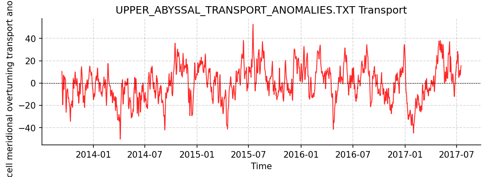
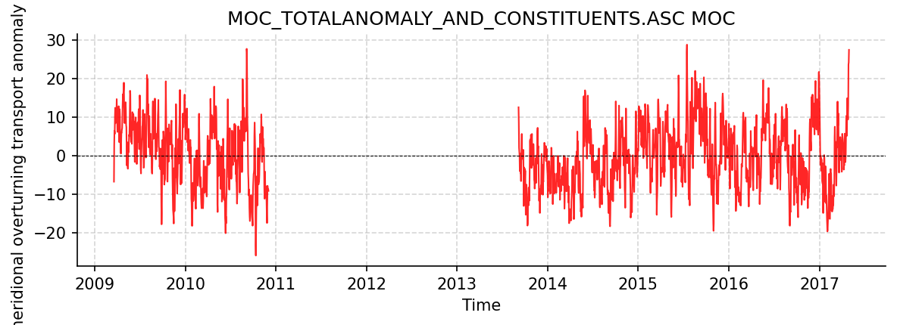

SAMBA Datasets
This report covers all available SAMBA datasets.
Upper_Abyssal_Transport_Anomalies.txt
Dataset Overview
Project: South Atlantic MOC Basin-wide Array (SAMBA)
Description: SAMBA 34S transport estimates dataset
Source File: Upper_Abyssal_Transport_Anomalies.txt
Data Product: Daily volume transport anomaly estimates for the upper and abyssal cells of the MOC
License:
Time Coverage: 2013-09-12 to 2017-07-16
Record Length: 1,404 observations (3.8 years)
Sampling Frequency: daily
Distribution Statement:
Upper and abyssal cell transport data from the South Atlantic MOC Basin-wide Array (SAMBA) is made freely available to the public at: https://www.aoml.noaa.gov/phod/SAMOC_international/ in accordance with the SAMOC Data Sharing Policy. If you use these data, please make sure to cite the Kersalé et al. (2020) publication as it contains the appropriate credit for all of the data producers in the Acknowledgements.
Citation:
Kersalé et al., Highly variable upper and abyssal overturning cells in the South Atlantic. Sci. Adv. 6, eaba7573 (2020). DOI: 10.1126/sciadv.aba7573
Acknowledgement:
SAMBA data were collected and made freely available by the SAMOC international project and contributing national programs.
Dataset Visualization
{kind=link}

Time series plot for UPPER_ABYSSAL_TRANSPORT_ANOMALIES.TXT dataset.
Dataset Statistics
Total Variables: 2
Total Coordinates: 1
Dataset Size: 0.03 MB
Coordinate Information
The following table shows information about the dataset coordinates in the standardised version, including coordinate name remapping from the original, if any:
Coordinate |
Description |
Units |
Size |
Min Value |
Max Value |
Missing % |
|---|---|---|---|---|---|---|
TIME |
Time |
seconds since 1970-01-01T00:00:00Z |
(1404,) |
2013-09-12 |
2017-07-16 |
0.0% |
Variable Information
The following table shows the mapping from original variable names to standardized names, along with key statistics for each variable.
Variable |
Description |
Units |
Size |
Min Value |
Max Value |
Missing % |
|---|---|---|---|---|---|---|
Abyssal_cell_volume_transport_anomaly__relative_to_record_length_average_of_7_8_Sv → TRANS_ABYSSAL |
abyssal-cell meridional overturning transport anomaly: Abyssal-cell volume transport anomaly (relative to record-length average of 7.8 Sv) |
sverdrup |
(1404,) |
-19.09 |
24.00 |
0.0% |
Upper_cell_volume_transport_anomaly__relative_to_record_length_average_of_17_3_Sv → TRANS_UPPER |
upper-cell meridional overturning transport anomaly: Upper-cell volume transport anomaly (relative to record-length average of 17.3 Sv) |
sverdrup |
(1404,) |
-50.28 |
52.69 |
0.0% |
Metadata (edits applied noted)
The following metadata describes this dataset:
Summary: SAMBA 34S transport estimates dataset
Description*: SAMBA 34S transport estimates dataset
Program*: SAMBA
Project*: South Atlantic MOC Basin-wide Array (SAMBA)
Acknowledgment: SAMBA data were collected and made freely available by the SAMOC international project and contributing national programs.
Weblink*: https://www.aoml.noaa.gov/phod/samoc
Distribution Statement*: Upper and abyssal cell transport data from the South Atlantic MOC Basin-wide Array (SAMBA) is made freely available to the public at: https://www.aoml.noaa.gov/phod/SAMOC_international/ in accordance with the SAMOC Data Sharing Policy. If you use these data, please make sure to cite the Kersalé et al. (2020) publication as it contains the appropriate credit for all of the data producers in the Acknowledgements.
Platform: mooring
Platform Vocabulary: https://vocab.nerc.ac.uk/collection/L06/
Data Product*: Daily volume transport anomaly estimates for the upper and abyssal cells of the MOC
Time Coverage Start*: 2013-09-12
Time Coverage End*: 2017-07-16
Contributing Institutions:
Contributing Institutions Vocabulary:
Contributing Institutions Role:
Conventions*: CF-1.8, ACDD-1.3, OceanSITES-1.5
featureType*: timeSeries
featureType_vocabulary: https://cfconventions.org/cf-conventions/v1.6.0/cf-conventions.html#_features_and_feature_types
Source File*: Upper_Abyssal_Transport_Anomalies.txt
Source Path*: ~/.amocatlas_data/Upper_Abyssal_Transport_Anomalies.txt
Source Url*: ftp://ftp.aoml.noaa.gov/phod/pub/SAM/2020_Kersale_etal_ScienceAdvances/
Date Modified: 2026-08-01T00:00:00Z
Processing Software: http://github.com/AMOCcommunity/amocatlas
Processing Version: v0.4.0
Processing Datasource*: samba34s
Applied Variable Mapping: [Complex metadata structure - 2 items]
Original Variable Mapping: [Complex metadata structure - 2 items]
Sanitization Mapping: [Complex metadata structure - 7 items]
MOC_TotalAnomaly_and_constituents.asc
Dataset Overview
Project: South Atlantic MOC Basin-wide Array (SAMBA)
Description: SAMBA 34S transport estimates dataset
Source File: MOC_TotalAnomaly_and_constituents.asc
Data Product: Daily travel time values, calibrated to a nominal pressure of 1000 dbar, and bottom pressures from the two PIES/CPIES moorings
License:
Time Coverage: 2009-03-19 to 2017-04-29
Record Length: 2,964 observations (8.1 years)
Sampling Frequency: daily
Distribution Statement:
MOC transport data from the South Atlantic MOC Basin-wide Array (SAMBA) is made freely available to the public at: https://www.aoml.noaa.gov/phod/SAMOC_international/ . If you use data from SAMBA, please make sure to cite the Meinen et al. (2018) publication as it contains the appropriate credit for all of the data producers in the Acknowledgements.
Citation:
Meinen, C. S., Speich, S., Piola, A. R., Ansorge, I., Campos, E., Kersalé, M., et al. (2018). Meridional overturning circulation transport variability at 34.5°S during 2009–2017: Baroclinic and barotropic flows and the dueling influence of the boundaries. Geophysical Research Letters, 45, 4180–4188. https://doi.org/10.1029/2018GL077408
Acknowledgement:
SAMBA data were collected and made freely available by the SAMOC international project and contributing national programs.
Dataset Visualization
{kind=link}

Time series plot for MOC_TOTALANOMALY_AND_CONSTITUENTS.ASC dataset.
Dataset Statistics
Total Variables: 8
Total Coordinates: 1
Dataset Size: 0.20 MB
Coordinate Information
The following table shows information about the dataset coordinates in the standardised version, including coordinate name remapping from the original, if any:
Coordinate |
Description |
Units |
Size |
Min Value |
Max Value |
Missing % |
|---|---|---|---|---|---|---|
TIME |
Time |
seconds since 1970-01-01T00:00:00Z |
(2964,) |
2009-03-19 |
2017-04-29 |
0.0% |
Variable Information
The following table shows the mapping from original variable names to standardized names, along with key statistics for each variable.
Variable |
Description |
Units |
Size |
Min Value |
Max Value |
Missing % |
|---|---|---|---|---|---|---|
Total_MOC_anomaly__relative_to_record_length_average_of_14_7_Sv → MOC_ANOM |
meridional overturning transport anomaly: MOC Total Anomaly (relative to record-length average of 14.7 Sv) |
sverdrup |
(2964,) |
-25.89 |
28.72 |
34.0% |
Ekman__wind__contribution_to_the_MOC_anomaly → TRANS_EKMAN |
meridional overturning transport anomaly, Ekman (wind) contribution: Ekman (wind) contribution to the MOC anomaly |
sverdrup |
(2964,) |
-15.65 |
20.30 |
34.0% |
Reference__bottom_pressure_gradient__contribution_to_the_MOC_anomaly → TRANS_REFERENCE |
meridional overturning transport anomaly, reference (bottom-pressure-gradient) contribution: Reference (bottom pressure gradient) contribution to the MOC anomaly |
sverdrup |
(2964,) |
-12.14 |
20.58 |
34.0% |
Eastern_bottom_pressure_contribution_to_the_MOC_anomaly → TRANS_REFERENCE_EAST |
meridional overturning transport anomaly, eastern-boundary bottom-pressure contribution: Eastern bottom pressure contribution to the MOC anomaly |
sverdrup |
(2964,) |
-12.93 |
11.15 |
34.0% |
Western_bottom_pressure_contribution_to_the_MOC_anomaly → TRANS_REFERENCE_WEST |
meridional overturning transport anomaly, western-boundary bottom-pressure contribution: Western bottom pressure contribution to the MOC anomaly |
sverdrup |
(2964,) |
-13.60 |
21.73 |
34.0% |
Relative__density_gradient__contribution_to_the_MOC_anomaly → TRANS_RELATIVE |
meridional overturning transport anomaly, relative (density-gradient) contribution: Relative (density gradient) contribution to the MOC anomaly |
sverdrup |
(2964,) |
-19.69 |
16.51 |
34.0% |
Eastern_density_contribution_to_the_MOC_anomaly → TRANS_RELATIVE_EAST |
meridional overturning transport anomaly, eastern-boundary density contribution: Eastern density contribution to the MOC anomaly |
sverdrup |
(2964,) |
-16.67 |
13.94 |
34.0% |
Western_density_contribution_to_the_MOC_anomaly → TRANS_RELATIVE_WEST |
meridional overturning transport anomaly, western-boundary density contribution: Western density contribution to the MOC anomaly |
sverdrup |
(2964,) |
-16.32 |
6.87 |
34.0% |
Metadata (edits applied noted)
The following metadata describes this dataset:
Summary: SAMBA 34S transport estimates dataset
Description*: SAMBA 34S transport estimates dataset
Program*: SAMBA
Project*: South Atlantic MOC Basin-wide Array (SAMBA)
Acknowledgment: SAMBA data were collected and made freely available by the SAMOC international project and contributing national programs.
Weblink*: https://www.aoml.noaa.gov/phod/samoc
Distribution Statement*: MOC transport data from the South Atlantic MOC Basin-wide Array (SAMBA) is made freely available to the public at: https://www.aoml.noaa.gov/phod/SAMOC_international/ . If you use data from SAMBA, please make sure to cite the Meinen et al. (2018) publication as it contains the appropriate credit for all of the data producers in the Acknowledgements.
Platform: mooring
Platform Vocabulary: https://vocab.nerc.ac.uk/collection/L06/
Data Product*: Daily travel time values, calibrated to a nominal pressure of 1000 dbar, and bottom pressures from the two PIES/CPIES moorings
Time Coverage Start*: 2009-03-19
Time Coverage End*: 2017-04-29
Contributing Institutions:
Contributing Institutions Vocabulary:
Contributing Institutions Role:
Conventions*: CF-1.8, ACDD-1.3, OceanSITES-1.5
featureType*: timeSeries
featureType_vocabulary: https://cfconventions.org/cf-conventions/v1.6.0/cf-conventions.html#_features_and_feature_types
Source File*: MOC_TotalAnomaly_and_constituents.asc
Source Path*: ~/.amocatlas_data/MOC_TotalAnomaly_and_constituents.asc
Source Url*: https://www.aoml.noaa.gov/phod/SAMOC_international/documents/
Date Modified: 2026-08-01T00:00:00Z
Processing Software: http://github.com/AMOCcommunity/amocatlas
Processing Version: v0.4.0
Processing Datasource*: samba34s
Applied Variable Mapping: [Complex metadata structure - 8 items]
Original Variable Mapping: [Complex metadata structure - 8 items]
Sanitization Mapping: [Complex metadata structure - 12 items]